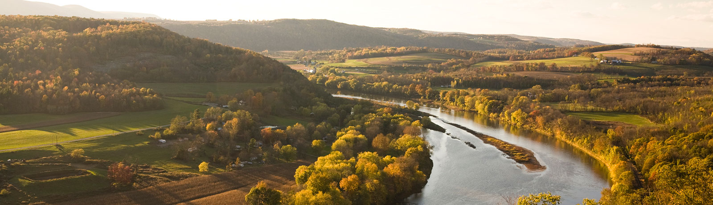
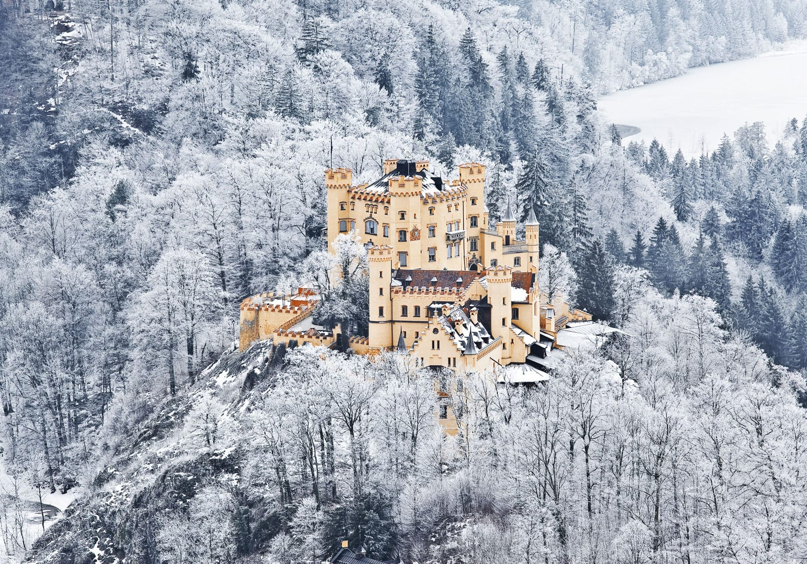
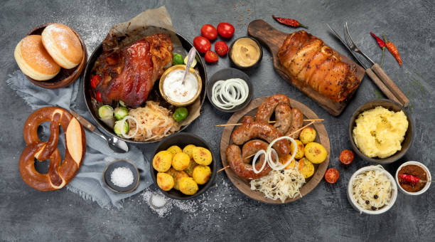
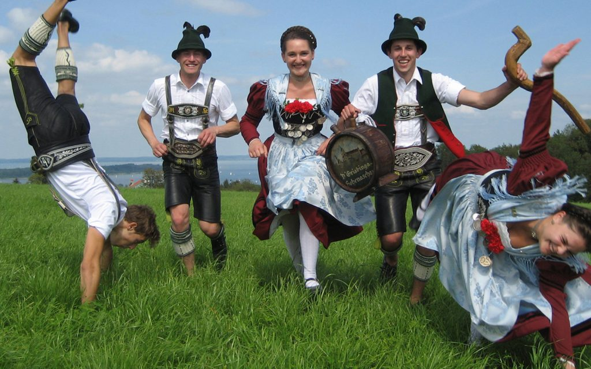
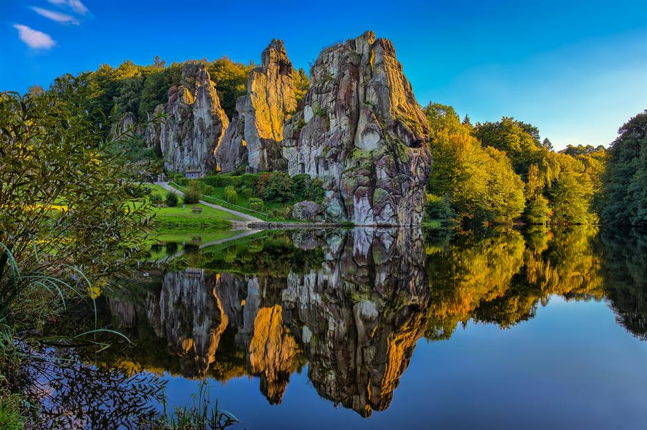
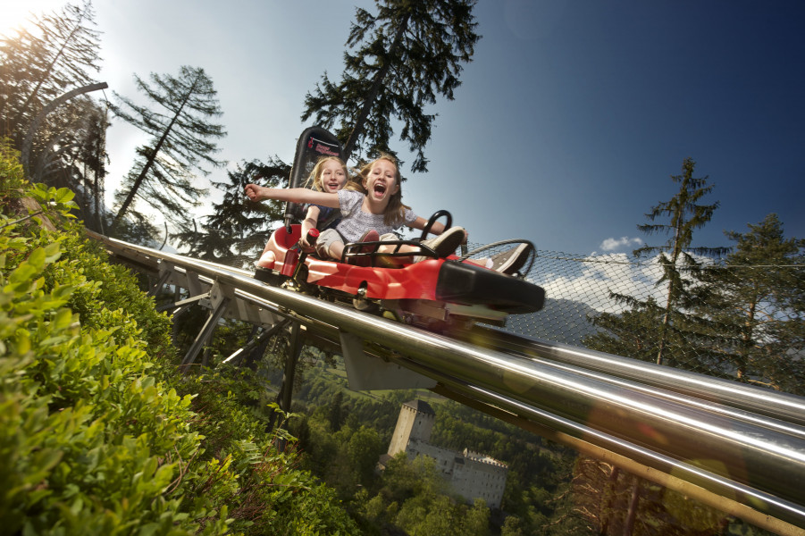
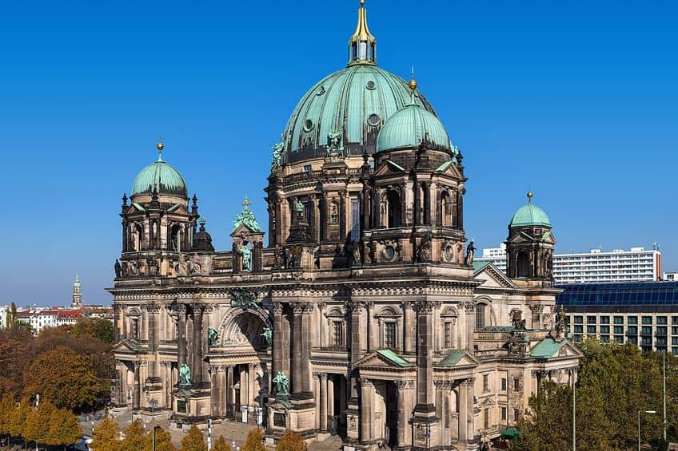

Learn About the History and Culture of Germany!
The Castles of Germany

The Food of Germany

The Clothing of Germany

The Natural World of Germany

The Attractions of Germany

The Architecture of Germany

Last Page